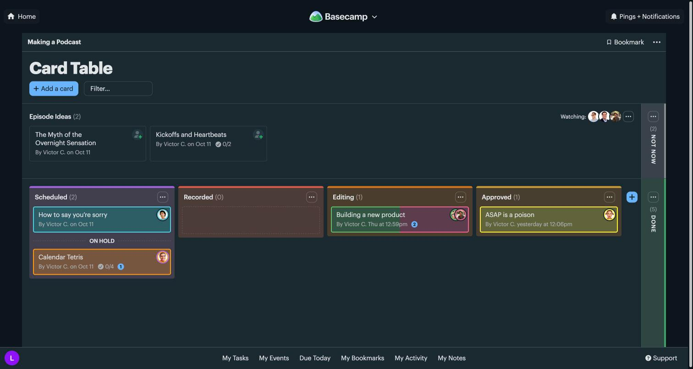
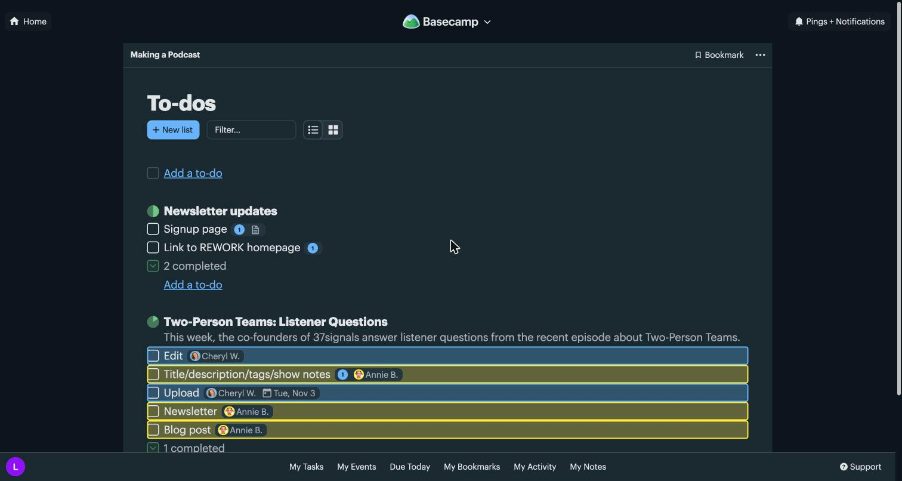
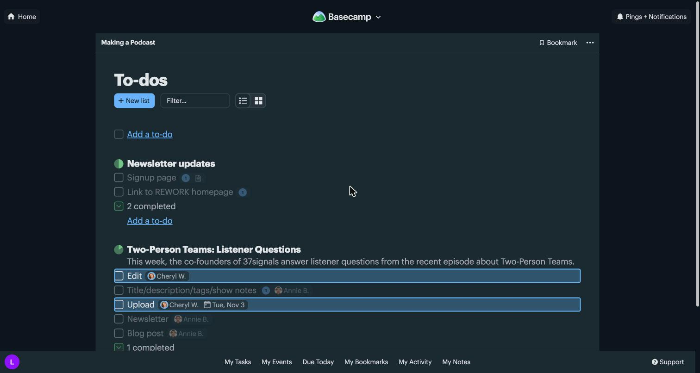
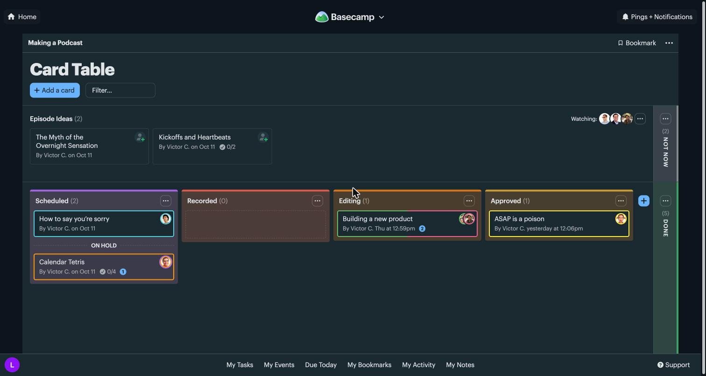
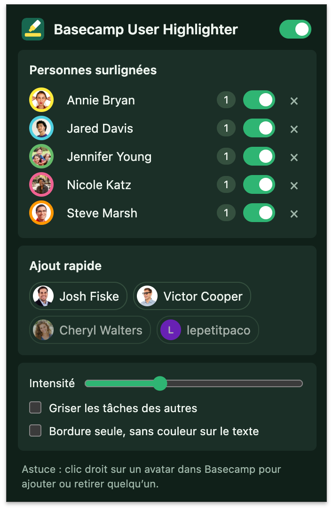

Les cartes et les to-dos de vos collègues s'allument dans la couleur de chacun.

Tableaux de cartes, listes de to-dos et Mes tâches. Rien à l'intérieur d'une carte ou d'une tâche, là où ça ne sert à rien.

Grisez les tâches des autres pour vous concentrer, gardez une simple bordure, ou réglez l'intensité.


Les gens croisés dans Basecamp apparaissent tout seuls. Pas d'identifiant à chercher, et une couleur libre pour chacun, à changer quand vous voulez.

Qui fait quoi, d'un coup d'œil
Les cartes et les to-dos de vos collègues s'allument dans la couleur de chacun.